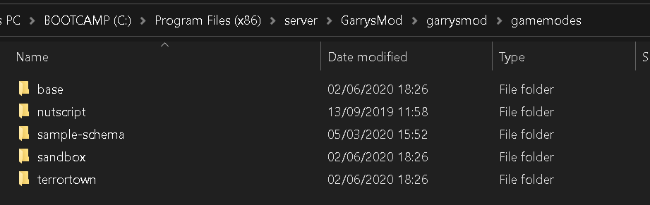

Developing the Schema
Initial Setup
Make sure that you have the Nutscript framework already installed in the gamemodes folder (rename it to nutscript).
In the same gamemodes plugin, place/create your schema folder, and name it as the name of your schema (hl2rp/cityrp/scprp)

The Main Schema Folder
Within the Schema folder, you must have 3 additional folders:
- gamemode
- plugins
-
schema
and one .txt file named identically to your schema name (that is, if your schema is called hl2rp, the txt must also be called hl2rp.txt)
Warning
As a Rule of Thumb, you should not modify the gamemode folder at any point. Please look at pre-existing schemas and copy the gamemode folder from there.
-
The
pluginsfolder is used to install additional plugins to the schema. -
The
schemafolder contains the core files of your schema.
The Schema Folder
Within the schema folder, you must have 2 crucial folders: items and factions, as well as a crucial file called sh_schema.lua
The Factions Folder
The factions folder is used to create new factions playable on your gamemode. Each faction is represented by their individual file.
Example
For example, if you want to have 3 factions called "Citizen", "Police" and "Insurgents", you would have 3 files within the factions folder
Each file must contain the following code:
The Items Folder
The items folder contains all the items that your schema provides.
There are 2 methods to adding items to your schema: single file items or via a base
Single File Items
You can add an item as a single file by creating one in the items folder directly. For example, if you want to create a potato item, you would create a new file called sh_potato.lua
Inside the file, you must have this code:
If you want your items to have functionality, you may add functions via ITEM.functions.<name>. For example:
Using a Base
Using a base is useful if you want multiple items that function relatively identical, such as foods or weapons.
To create items via a base, you need to create 2 folders: base and a folder with the base name. For example, if I want to create a food item base, I would have 2 folders named
Inside the base folder, create a lua file called the same as the target base folder
Example
For instance, if I am creating a food item base, I would create a file called sh_food.lua
Inside this new file goes the default information of the item. Items defined within the target base folder will inherit all the values and functions from this base file.
Let's create a food base
Now, in the food folder, we can create as many different food items as we please, and each will inherit these default values.
In the food folder, I will create a milk item. Call it sh_milk.lua
The new milk item will inherit everything from the food base, such as the consume function, however, we editted some values, such as health and action, so when the consume function is used on the item, it will use these values instead.
If you want multiple bases, create individual files in the base folder, and a new folder for each base type.
The sh_schema.lua File
The sh_schema.lua file is a crucial part of the schema. Upon creating it, enter the following code:
While you can contain all of your code within this one file, you may want to create additional files in the schema and spread the code among them, for convenience and security. To do this, use the following:
nut.util.include("sh_commands.lua") -- this allows code within the sh_commands.lua file to be readable by the schema.
nut.util.includeDir("hooks") -- this allows all files within the hooks folder in the schema folder to be readable by the schema
Warning
Keep in mind that if you try to use functions or variables defined in these external files before they are included in the schema, they will not be available.
Note
Keep in mind that if you want to add folders that are default to nutscript, such as classes, meta or libs, it is not necessary to include them.
Developing Plugins
If you wish to create your own plugins, in order to keep the schema modular and organized, head over to Developing Plugins.